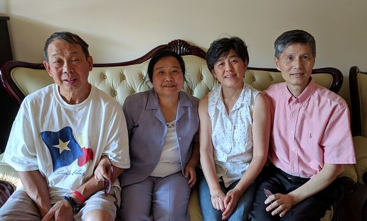

Priscilla (#books)
Having grown up with Disney fairytales and other literary heroines such as Anne of Green Gables and Hermione Granger, Priscilla was raised to be an independent woman who still trusted that someday her own Prince Charming would come. Passionate for God's creation and humankind, she set on her own adventure fighting injustices in human trafficking, living in the sub-Saharan African continent for global health work, and currently working as a philanthropic grantmaker with the Bristol-Myers Squibb Foundation.
John (#bots)
John is a Ph.D. student studying astrophysics. Despite his nerdy interests, John has always identified as a hard-core extravert and friend to all. He is wholeheartedly committed to serving his communities in the school, church, and neighboring towns.
His moniker, "bots," derives from both his love of botany and his slightly robotic (or un-emotional) temperament.
Point Community Church
In early 2015, Priscilla moved to New Jersey and began attending Point Community Church. John had already called PCC his church home for a few years, playing keys for worship, tutoring at Parsons elementary school, and leading bible studies for the graduate students/young adults. Although Priscilla had some reservations when they first met, gradually John was able to woo her with kindness, patience, and respect.
Spring - Summer 2015The beginnings of #booksnbots
A summer road trip to Chicago would forever intertwine Priscilla's and John's trajectories. Late night conversations sparked on that car ride would continue through modern-day love letters (aka emails) in spite of Priscilla's frequent work trips. When she returned, they enjoyed their first date at a bookstore, To Be Continued... It took them less than a week to make it official, and the rest is history!
September 23, 2015Meeting the parents
Priscilla had the opportunity of having monthly dinners and spending her first Christmas with John's family, steadily getting to know her future in-laws. John was initially intimidated to meet Priscilla's family in Texas during his spring break, especially because: (1) John was meeting the Ko family for the first time, (2) Priscilla's dad was a pre-marital counselor, and (3) John crashed the Ko's family car within 24 hours of arrival! However, Priscilla's family still welcomed him and gave their blessing for John to marry their daughter.
 Fall - Winter 2015Four seasons of dating

Fall 2015
Bear Mountain, NY
Winter 2015
New Year's Eve in New York City

Spring 2016
The O'Dell's Wedding

Summer 2016
Rehoboth Beach, DE
Married!
Priscilla and John chose to enter their marital union in an unconventional but deliberately simple fashion. The ceremony was held in John's living room with a few friends gathered and a video stream set up for friends and family to tune in online. They were incredibly blessed by their church community who came together with flowers, food, and fellowship to witness their matrimony.
You can watch a video made by one of our friends:
Newlywed Homecoming Reception in Texas
We cordially invite you to celebrate with us in Dallas. Please see details below and kindly RSVP by April 30, 2017. We look forward to seeing you in May!
Date:
Sunday, May 28, 2017
Time:
5:30pm (arrival)